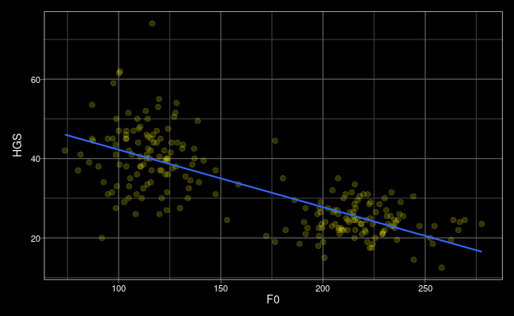
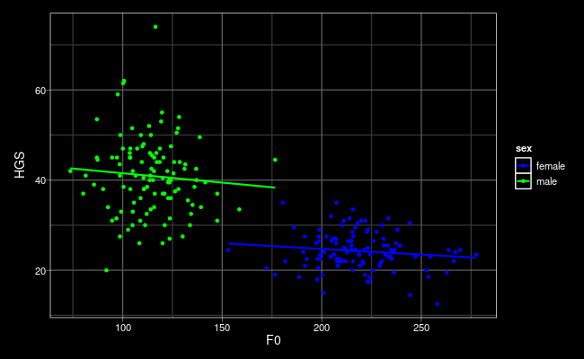
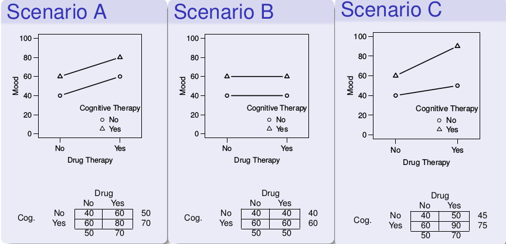

Dale Barr (University of Glasgow)
Mixed-effects workshop, July 20-21, 2022 (Reading)
Interactions
“It depends.”
The effect of a predictor variable on the response variable may depend upon the value(s) of one or more other predictor variables.
continuous-by-categorical interactions
strength and voice
Do stronger people tend to have lower voices?
Han, C., Wang, H., Fasolt, V., Hahn, A. C., Holzleitner, I. J., DeBruine, L. M., & Jones, B. C. (2017). No evidence for correlations between handgrip strength and sexually dimorphic acoustic properties of voices. bioRxiv, 227165.
the data
- HGS: Hand grip strength
- F0: voice fundamental frequency
# A tibble: 221 x 4
ID sex HGS F0
<int> <chr> <dbl> <dbl>
1 4 male 45.5 115.
2 7 male 31 147.
3 8 male 40 123.
4 19 male 37 120.
5 21 male 45 94.7
6 22 male 50 98.8
7 30 male 31 94.7
8 31 male 47.5 124.
9 35 male 34 92.6
10 36 male 30 111.
# … with 211 more rows

N = 221
GLM
\(HGS_i = \beta_0 + \beta_1 F0_i + e_i\)
Call:
lm(formula = HGS ~ F0, data = hgs)
Residuals:
Min 1Q Median 3Q Max
-23.408 -4.115 -0.161 4.252 34.157
Coefficients:
Estimate Std. Error t value Pr(>|t|)
(Intercept) 56.699687 1.491239 38.02 <2e-16 ***
F0 -0.144729 0.008509 -17.01 <2e-16 ***
---
codes: 0 ‘***’ 0.001 ‘**’ 0.01 ‘*’ 0.05 ‘.’ 0.1 ‘ ’ 1
Residual standard error: 7.008 on 219 degrees of freedom
Multiple R-squared: 0.5692, Adjusted R-squared: 0.5672
F-statistic: 289.3 on 1 and 219 DF, p-value: < 2.2e-16

\(HGS_i = \beta_0 + \beta_1 F0_i + \beta_2 SEX_i + \beta_3 F0_i SEX_i + e_i\)
\(= \beta_0 + \beta_2 SEX_i + (\beta_1 + \beta_3 SEX_i) F0_i + e_i \)
HGS ~ F0 + sex + F0:sex
HGS ~ F0 * sex
- SEX: 0 = female, 1 = male
- female: \(\beta_0 + \beta_1 F0_i\)
- male: \(\beta_0 + \beta_2 + (\beta_1 + \beta_3) F0_i\)
dummy coding
hgs2 <- hgs %>%
mutate(sex_male = if_else(sex == "male", 1, 0))
## double check
hgs2 %>% distinct(sex, sex_male)
# A tibble: 2 x 2 sex sex_male <chr> <dbl> 1 male 1 2 female 0
Analysis
lm(HGS ~ sex_male * F0, hgs2) %>% summary()
Call:
lm(formula = HGS ~ sex_male * F0, data = hgs2)
Residuals:
Min 1Q Median 3Q Max
-21.859 -3.540 -0.421 3.361 33.163
Coefficients:
Estimate Std. Error t value Pr(>|t|)
(Intercept) 29.75789 6.50985 4.571 8.14e-06 ***
sex_male 15.91254 7.87733 2.020 0.0446 *
F0 -0.02508 0.02965 -0.846 0.3985
sex_male:F0 -0.01642 0.04847 -0.339 0.7351
---
codes: 0 ‘***’ 0.001 ‘**’ 0.01 ‘*’ 0.05 ‘.’ 0.1 ‘ ’ 1
Residual standard error: 6.643 on 217 degrees of freedom
Multiple R-squared: 0.6163, Adjusted R-squared: 0.611
F-statistic: 116.2 on 3 and 217 DF, p-value: < 2.2e-16
categorical-by-categorical interactions
Factorial designs
- Used to address question involving more than one factor that can
influence a DV, with each factor acting alone or in combination
with other factors
- What are the effects of cognitive therapy and drug therapy on mood in depressed individuals?
- Do male and female students learn better with male or female teachers?
Full Factorial Designs
- A study has a full factorial design if it has more than one IV and the levels of the IVs are “fully crossed”
- designs are designated using RxC (row-by-column) format
- cell: unique combination of the levels of the factors

Factorial Plots and Interpretation

Effects in Factorial Designs
- Main Effects: tests of marginal means
- \(H_0: \mu_{A_1} = \mu_{A_2}\)
- \(H_0: \mu_{B_1} = \mu_{B_2}\)
- Simple Effects: effect of factor at level of other
- eff of \(B\) at \(A_1\), \(H_0: \mu_{A_1B_1} = \mu_{A_1B_2} \)
- eff of \(B\) at \(A_2\), \(H_0: \mu_{A_2B_1} = \mu_{A_2B_2} \)
- Interaction: equivalence of simple effects
- \(H_0: \mu_{A_1B_2}-\mu_{A_1B_1} = \mu_{A_2B_2}-\mu_{A_2B_1}\)
A Common Fallacy
“The percentage of neurons showing cue-related activity increased with training in the mutant mice (\(p < 0.05\)), but not in the control mice (\(p > 0.05\)).”
- saying the simple effect is significant in one case but not in another does not imply that the simple effects are statistically different
Gelman, A., & Stern, H. (2012). The difference between “significant” and “not significant” is not itself statistically significant. The American Statistician, 60, 328–331.
Nieuwenhuis, S., Forstmann, B. U., & Wagenmakers, E. J. (2011). Erroneous analyses of interactions in neuroscience: a problem of significance. Nature Neuroscience, 14, 1105-1107.
Coding categorical predictors
main schemes
| Scheme | \(A_1\) | \(A_2\) |
|---|---|---|
| Treatment (dummy) | \(0\) | \(1\) |
| Sum | \(-1\) | \(1\) |
| Deviation | \(-\frac{1}{2}\) | \(\frac{1}{2}\) |
Choice of a coding scheme impacts interpretation of:
- the intercept term; and
- the interpretation of the tests for all but the highest-order effects and interactions in a factorial design.
Interpretation
| term | treatment | sum | deviation |
|---|---|---|---|
| \(\mu\) | \(\bar{Y}_{111}\) | \(\bar{Y}_{...}\) | \(\bar{Y}_{...}\) |
| \(A\) | \(\bar{Y}_{211} - \bar{Y}_{111}\) | \(\frac{(\bar{Y}_{2..} - \bar{Y}_{1..})}{2}\) | \(\bar{Y}_{2..} - \bar{Y}_{1..}\) |
| \(B\) | \(\bar{Y}_{121} - \bar{Y}_{111}\) | \(\frac{(\bar{Y}_{.2.} - \bar{Y}_{.1.})}{2}\) | \(\bar{Y}_{.2.} - \bar{Y}_{.1.}\) |
| \(C\) | \(\bar{Y}_{112} - \bar{Y}_{111}\) | \(\frac{(\bar{Y}_{..2} - \bar{Y}_{..1})}{2}\) | \(\bar{Y}_{..2} - \bar{Y}_{..1}\) |
| \(AB\) | \((\bar{Y}_{221} - \bar{Y}_{121}) - (\bar{Y}_{211} - \bar{Y}_{111})\) | \(\frac{(\bar{Y}_{22.} - \bar{Y}_{12.}) - (\bar{Y}_{21.} - \bar{Y}_{11.})}{4}\) | \((\bar{Y}_{22.} - \bar{Y}_{12.}) - (\bar{Y}_{21.} - \bar{Y}_{11.})\) |
| \(AC\) | \((\bar{Y}_{212} - \bar{Y}_{211}) - (\bar{Y}_{112} - \bar{Y}_{111})\) | \(\frac{(\bar{Y}_{2.2} - \bar{Y}_{1.2}) - (\bar{Y}_{2.1} - \bar{Y}_{1.1})}{4}\) | \((\bar{Y}_{2.2} - \bar{Y}_{1.2}) - (\bar{Y}_{2.1} - \bar{Y}_{1.1})\) |
| \(BC\) | \((\bar{Y}_{122} - \bar{Y}_{112}) - (\bar{Y}_{121} - \bar{Y}_{111})\) | \(\frac{(\bar{Y}_{.22} - \bar{Y}_{.12}) - (\bar{Y}_{.21} - \bar{Y}_{.11})}{4}\) | \((\bar{Y}_{.22} - \bar{Y}_{.12}) - (\bar{Y}_{.21} - \bar{Y}_{.11})\) |
\(k > 2\): dummy coding
Arbitrarily choose one as “baseline”.
\(k = 3\)
A2v1 |
A3v1 |
|
|---|---|---|
| \(A_1\) | 0 | 0 |
| \(A_2\) | 1 | 0 |
| \(A_3\) | 0 | 1 |
\(k = 4\)
A2v1 |
A3v1 |
A4v1 |
|
|---|---|---|---|
| \(A_1\) | 0 | 0 | 0 |
| \(A_2\) | 1 | 0 | 0 |
| \(A_3\) | 0 | 1 | 0 |
| \(A_4\) | 0 | 0 | 1 |
\(k > 2\): deviation coding
target level: \(\frac{k - 1}{k}\)
otherwise: \(-\frac{1}{k}\)
\(k = 3\)
A2v1 |
A3v1 |
|
|---|---|---|
| \(A_1\) | -1/3 | -1/3 |
| \(A_2\) | 2/3 | -1/3 |
| \(A_3\) | -1/3 | 2/3 |
\(k = 4\)
A2v1 |
A3v1 |
A4v1 |
|
|---|---|---|---|
| \(A_1\) | -1/4 | -1/4 | -1/4 |
| \(A_2\) | 3/4 | -1/4 | -1/4 |
| \(A_3\) | -1/4 | 3/4 | -1/4 |
| \(A_4\) | -1/4 | -1/4 | 3/4 |
R implementation
Use dplyr::if_else().
dat2 <- dat %>%
mutate(A2vA1 = if_else(A == "A2", 2/3, -1/3),
A3vA1 = if_else(A == "A3", 2/3, -1/3))
dat2 %>% distinct(A, A2vA1, A3vA1)
# A tibble: 3 x 3 A A2vA1 A3vA1 <chr> <dbl> <dbl> 1 A1 -0.333 -0.333 2 A2 0.667 -0.333 3 A3 -0.333 0.667
Formulas in R
shorthand form
y ~ a * b * c
is shorthand for
y ~ a + b + c + a:b + a:c + b:c + a:b:c
when \(k > 2\)
y ~ (a1 + a2) * b
is shorthand for
y ~ a1 + a2 + b + a1:b + a2:b
and
y ~ (a1 + a2) * (b1 + b2)
is shorthand for
y ~ a1 + a2 + b1 + b2 + a1:b1 + a1:b2 + a2:b1 + a2:b2